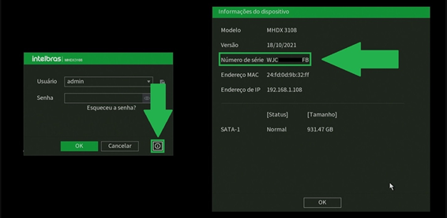
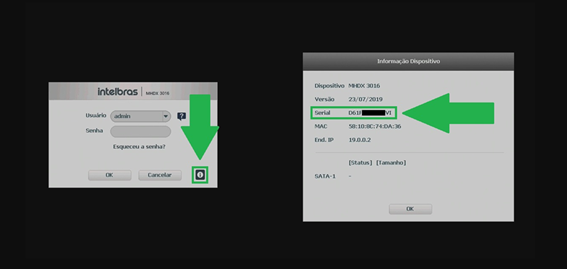
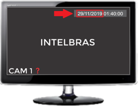
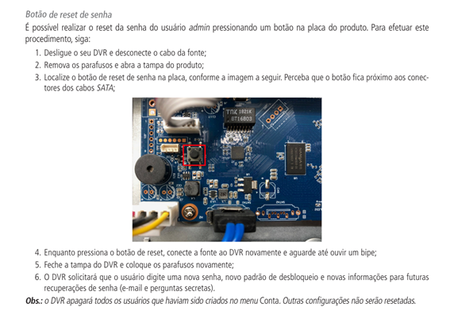
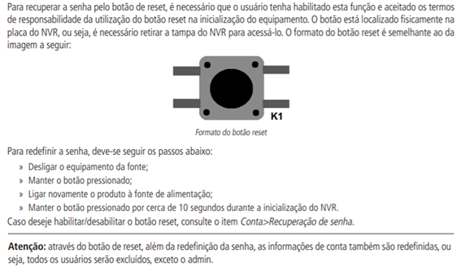
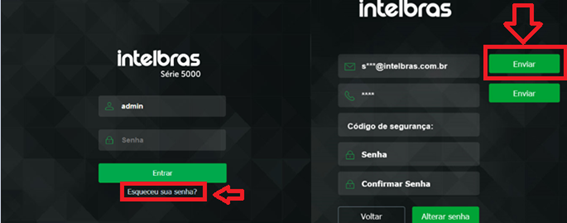
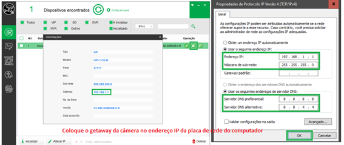
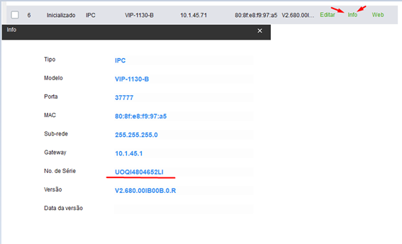
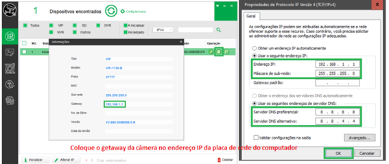
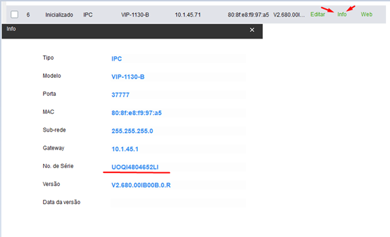

🔐 Recuperação de Senha
DVR / NVR
🟢 PASSO 1 - Solicitação de informações! (Modelo/NS/Versão)


🟢 PASSO 2- Solicitação da data do DVR!

🟢 PASSO 3- Enviar senha para o cliente!
🟢 Possíveis PROBLEMAS!
Cliente sem monitor
Data do gravador não é exibida
NVD com firmware abaixo de 2020
Cliente tentando dar padrão de fábrica com a senha provisória
🟢 Imagens e Tutoriais úteis


📄PDF Como recuperar a senha de gravadores
Câmera IP
🟢 Explicação do procedimento de recuperação de senha via e-mail!

🟢 Possíveis PROBLEMAS!
Falha na conexão - 1° parte (Explicação)
Falha na conexão - 2° parte (Compartilhar Wi-fi)
Falha na conexão - 3° parte (Fixar IP do computador)
Ponto a ponto não envia? Verifique botão físico ou procure a assistência técnica
🟢 Imagens e Tutoriais úteis
 



📄PDF Como recuperar a senha de gravadores